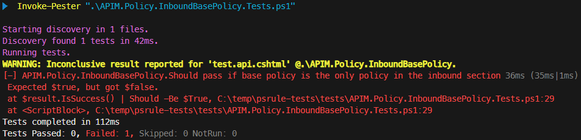
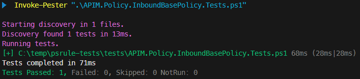

Testing PSRule Rules for API Management Policies with Pester

In my previous blog post, Validate API Management Policies with PSRule, I demonstrated how to use PSRule to validate Azure API Management policies. We defined a PSRule convention along with several custom rules, each containing specific logic.
As a fan of Test Driven Development (TDD), I created these rules following a test-first approach. In this post, I’ll walk you through how to write automated tests for these PSRule rules using Pester, a popular testing and mocking framework for PowerShell.
While a deep dive into Pester’s concepts is beyond the scope of this post, if you’re new to the tool, I highly recommend checking out the Quick Start guide in the official documentation.
Table of Contents
- Prerequisites
- Unit Tests for APIM.Policy.InboundBasePolicy
- Refactor tests
- Test convention
- Run tests in Azure pipeline
Prerequisites
If you haven’t installed PSRule yet, follow the instructions on the official Install PSRule page. Please note that this blog post uses version 2.9.0 of PSRule.
To install Pester, refer to the Installation and Update guide. The sample tests in this post are based on Pester v5.
You’ll also need the rules, policies and related files from the previous blog post. You can download them here. To get started, create a new folder and unzip the files into it. After extraction, your folder structure should look like this:
/your-root
/.ps-rule
APIM.Policy.Conventions.Rule.ps1
APIM.Policy.Rule.ps1
APIM.Policy.Suppressions.Rule.yaml
ps-rule.yaml
/src
/bad
bad.api.cshtml
bad.fragment.cshtml
...
/good
global.cshtml
good.api.cshtml
...
/suppressed
global.cshtml
suppressed-unknown-scope.cshtml
...
Open a PowerShell terminal and run the following command to verify that the custom rules are executed correctly:
Invoke-PSRule -InputPath ".\src\" -Option ".\.ps-rule\ps-rule.yaml"
You should see rules following the naming convention APIM.Policy.* being executed.
Unit Tests for APIM.Policy.InboundBasePolicy
In the previous blog post, we created a rule named APIM.Policy.InboundBasePolicy, which implements the following logic:
The inbound section should always start with a base policy to ensure that critical logic, such as security checks, is applied first. This rule should apply to all scopes except for the global scope and policy fragments.
This rule is implemented in the /.ps-rule/APIM.Policy.Rule.ps1 file and includes the following logic:
# Synopsis: The first policy inside the inbound section should be the base policy to make sure important logic like security checks are applied first.
Rule "APIM.Policy.InboundBasePolicy" -If { $TargetObject.Scope -ne "Global" -and $TargetObject.Scope -ne "Fragment" } -Type "APIM.Policy" {
$policy = $TargetObject.Content.DocumentElement
$Assert.HasField($policy, "inbound")
$Assert.HasField($policy.inbound, "base")
$Assert.HasFieldValue($policy, "inbound.FirstChild.Name", "base")
}
To ensure that the tests work, we’ll simulate a Test Driven Development (TDD) approach. Locate the APIM.Policy.InboundBasePolicy rule in your APIM.Policy.Rule.ps1 file and replace it with the following code:
# Synopsis: The first policy inside the inbound section should be the base policy to make sure important logic like security checks are applied first.
Rule "APIM.Policy.InboundBasePolicy" <#-If { $TargetObject.Scope -ne "Global" -and $TargetObject.Scope -ne "Fragment" }#> -Type "APIM.Policy" {
$policy = $TargetObject.Content.DocumentElement
# $Assert.Pass()
# $Assert.HasField($policy, "inbound")
# $Assert.HasField($policy.inbound, "base")
# $Assert.HasFieldValue($policy, "inbound.FirstChild.Name", "base")
}
As you can see, we’ve commented out the -If parameter to ensure that the rule always executes. We’ve also commented out the assertions, so the rule will always fail but without providing a specific reason.
Next, create a new tests folder in your root directory. Inside this folder, create a new file named APIM.Policy.InboundBasePolicy.Tests.ps1. Notice that the file name mirrors the rule name, with .Tests appended. While the rules themselves are bundled together in a single file, I prefer to create a separate test file for each rule. This makes it easier to find and maintain the tests.
Now, add the following code to APIM.Policy.InboundBasePolicy.Tests.ps1:
BeforeAll {
# Setup error handling
$ErrorActionPreference = 'Stop';
Set-StrictMode -Version latest;
if ($Env:SYSTEM_DEBUG -eq 'true') {
$VerbosePreference = 'Continue';
}
}
Describe "APIM.Policy.InboundBasePolicy" {
}
This is the basic structure of a Pester test file that we’ll use. In the BeforeAll section, we configure error handling and enable verbose logging. This block runs once before the tests are executed.
The Describe block is used to group related tests. In this case, it groups all tests for the APIM.Policy.InboundBasePolicy rule.
Should pass if base policy is the only policy in the inbound section
Let’s begin with the first scenario to test this rule:
APIM.Policy.InboundBasePolicy should pass if base policy is the only policy in the inbound section
Locate the Describe block and add the following code:
It "Should pass if base policy is the only policy in the inbound section" {
$policy = [PSCustomObject]@{
PSTypeName = "APIM.Policy" # This is necessary for the -Type filter on a Rule to work
Name = "test.api.cshtml"
Scope = "API"
Content = [xml]@"
<policies>
<inbound>
<base />
</inbound>
</policies>
"@
}
$result = Invoke-PSRule -InputObject $policy -Name "APIM.Policy.InboundBasePolicy" -Path "$PSScriptRoot/../.ps-rule" -Option "$PSScriptRoot/../.ps-rule/ps-rule.yaml"
$result | Should -not -BeNullOrEmpty
$result.IsSuccess() | Should -Be $True
}
As you can see, the It block is used to define a test, followed by the scenario name.
The test begins by creating a custom object that represents an API-scoped policy. The structure of this object matches what we create in our custom convention. The PSTypeName property is important, because it’s used by PSRule to determine the object’s type when using the -Type filter on a rule. The policy XML is defined in the Content property, which, in this case, contains only an inbound section with a base policy.
Note that you could also create a
.cshtmlfile for each scenario and execute the rule against these files. However, I prefer to include the XML policy content directly in the test, as this allows me to see at a glance what the test does, without needing to open multiple files.
Next, we execute PSRule on the custom object. Until now, we’ve used the -InputPath parameter to analyze all files in a specific folder. By using the -InputObject parameter, we can run PSRule on a single object. The -Name parameter specifies the rule to execute, which is helpful since we have multiple rules defined and want to run only one. To load our custom rules, we use the -Path parameter to indicate the path to the .ps-rule folder and the -Option parameter for the PSRule configuration file.
Finally, we assert that the result is not empty and that the rule passed. For more information on assertions, see the Pester documentation.
To execute the test with Pester, open a new terminal window, navigate to the tests folder, and run the following command:
Invoke-Pester ".\APIM.Policy.InboundBasePolicy.Tests.ps1"
The test should fail and the output should resemble the following:

If the test failed with an error message like
The resource '.\APIM.Policy.BackendBasePolicy' is using a duplicate resource identifier. A resource with the identifier '.\APIM.Policy.BackendBasePolicy' already exists. Each resource must have a unique name, ref, and aliases. See https://aka.ms/ps-rule/naming for guidance on naming within PSRule, open a new terminal window, navigate to thetestsfolder, and run the command again. Sometimes, running PSRule and executing the tests from the same terminal can cause issues.
The test failed with the reason Expected $true, but got $false because the rule failed, but we expected it to pass. To resolve this, locate the APIM.Policy.InboundBasePolicy rule in APIM.Policy.Rule.ps1 and uncomment the $Assert.Pass() line.
When you rerun the test, it should pass, and the output should resemble the following:

Should fail if the inbound section is missing
Let’s implement a second test for the following scenario:
APIM.Policy.InboundBasePolicy should fail if the inbound section is missing
Note that when the inbound section is missing, API Management will automatically create it with the
basepolicy included. However, I prefer to enforce that the inbound section, along with thebasepolicy, is explicitly defined.
Add the following test to the Describe block:
It "Should fail if the inbound section is missing" {
$policy = [PSCustomObject]@{
PSTypeName = "APIM.Policy" # This is necessary for the -Type filter on a Rule to work
Name = "test.api.cshtml"
Scope = "API"
Content = [xml]"<policies></policies>"
}
$result = Invoke-PSRule -InputObject $policy -Name "APIM.Policy.InboundBasePolicy" -Path "$PSScriptRoot/../.ps-rule" -Option "$PSScriptRoot/../.ps-rule/ps-rule.yaml"
$result | Should -not -BeNullOrEmpty
$result.IsSuccess() | Should -Be $False
$result.Reason.Length | Should -BeGreaterOrEqual 1
$result.Reason[0] | Should -BeLike "*inbound*not exist*"
}
This test is similar to the first one, but the inbound section is missing, causing the policy to not comply with the rule. At the end of the test, we assert that the result is not empty, that the rule failed, and that the reason contains the expected message. By using the -BeLike assertion, we can leverage wildcards to match the message, making the test more robust against changes.
When you run the tests, the new test should fail. To make it pass, remove $Assert.Pass() and uncomment $Assert.HasField($policy, "inbound").
Should fail if the base policy is missing from the inbound section
Let’s implement another test for the following scenario:
APIM.Policy.InboundBasePolicy should fail if the base policy is missing from the inbound section
Add the following test to the Describe block:
It "Should fail if the base policy is missing from the inbound section" {
$policy = [PSCustomObject]@{
PSTypeName = "APIM.Policy" # This is necessary for the -Type filter on a Rule to work
Name = "test.api.cshtml"
Scope = "API"
Content = [xml]@"
<policies>
<inbound>
<not-base />
</inbound>
</policies>
"@
}
$result = Invoke-PSRule -InputObject $policy -Name "APIM.Policy.InboundBasePolicy" -Path "$PSScriptRoot/../.ps-rule" -Option "$PSScriptRoot/../.ps-rule/ps-rule.yaml"
$result | Should -not -BeNullOrEmpty
$result.IsSuccess() | Should -Be $False
$result.Reason.Length | Should -BeGreaterOrEqual 1
$result.Reason[0] | Should -BeLike "*base*not exist*"
}
This test is again very similar to the previous one. The only differences are the XML policy content and the expected reason message.
When you run the tests, the new test should fail. To make it pass, uncomment $Assert.HasField($policy.inbound, "base").
Should not apply to global
Finally, let’s implement a test for the following scenario:
APIM.Policy.InboundBasePolicy should not apply to global
Add the following test to the Describe block:
It "Should not apply to global" {
$policy = [PSCustomObject]@{
PSTypeName = "APIM.Policy" # This is necessary for the -Type filter on a Rule to work
Name = "global.cshtml"
Scope = "Global"
Content = [xml]"<policies></policies>"
}
$result = Invoke-PSRule -InputObject $policy -Name "APIM.Policy.InboundBasePolicy" -Path "$PSScriptRoot/../.ps-rule" -Option "$PSScriptRoot/../.ps-rule/ps-rule.yaml"
$result | Should -BeNull
}
This test is slightly different from the previous ones. On the custom object, the scope of the policy is set to Global and the name to global.cshtml. Since the rule should not be executed for this policy, we assert that the result is null.
When you run the tests, the new test should fail. To make it pass, uncomment the if condition -If { $TargetObject.Scope -ne "Global" -and $TargetObject.Scope -ne "Fragment" } behind the rule name by removing the <# and #> characters.
Other scenarios
The assertion $Assert.HasFieldValue($policy, "inbound.FirstChild.Name", "base") is still commented out in the rule, indicating that we are missing at least one scenario. If you look at the implementation of the rule, you’ll see that there are additional scenarios that are useful to test. We could add tests for the following scenarios:
- Should pass if base policy is the first policy in the inbound section
- Should fail if base policy is NOT the first policy in the inbound section
- Should fail if the inbound section is empty
- Should apply to workspace
- Should apply to product
- Should apply to operation
- Should not apply to policy fragment
Before we add these scenarios, we will first refactor the tests to make them more maintainable in the next section.
Refactor tests
You might have noticed a lot of code duplication in each test. The creation of the custom object with the policy, the execution of PSRule and the assertions are all very similar. We can refactor this code into reusable functions.
I’ve placed the functions in a separate file called Functions.ps1 in the tests folder. You can find the full implementation here. I’ll highlight the most important parts in the following sections.
Policy object creation
The custom policy object has the same structure for all tests. Only the scope, name and XML content differ. Here is an example of the functions to create a global and API policy object:
function New-GlobalPolicy([Parameter(Mandatory=$true)]$Xml)
{
return New-Policy -Scope "Global" -Name "global.cshtml" -Xml $Xml
}
function New-APIPolicy([Parameter(Mandatory=$true)]$Xml)
{
return New-Policy -Scope "API" -Name "test.api.cshtml" -Xml $Xml
}
function New-Policy([Parameter(Mandatory=$true)]$Scope, [Parameter(Mandatory=$true)]$Name, [Parameter(Mandatory=$true)]$Xml)
{
return [PSCustomObject]@{
PSTypeName = "APIM.Policy" # This is necessary for the -Type filter on a Rule to work
Name = $Name
Scope = $Scope
Content = [xml]$Xml
}
}
I’ve created a generic function called New-Policy that creates a policy object with the correct structure. The other two functions are wrappers that create a policy object with the appropriate scope and name.
Execute PSRule
When executing PSRule, the -Path and -Option parameters remain consistent. I’ve created a function that executes PSRule with these parameters to avoid repetition in each test. Here is the function:
function Invoke-CustomPSRule([Parameter(Mandatory=$true)]$InputObject, [Parameter(Mandatory=$true)]$Rule)
{
# The Path should point to the directory containing the rule files, else they won't be loaded
# The Option should point to the PSRule configuration file, else the conventions won't be loaded
return Invoke-PSRule -InputObject $InputObject -Name $Rule -Path "$PSScriptRoot/../.ps-rule" -Option "$PSScriptRoot/../.ps-rule/ps-rule.yaml"
}
Assertions
Lastly, each set of assertions can be extracted into its own function. Here are the functions to assert whether a rule has failed:
function Assert-RuleFailedWithReason {
[CmdletBinding()]
Param (
[Parameter(Mandatory=$true, ValueFromPipeline)][PSRule.Rules.RuleRecord]$RuleRecord,
[Parameter(Mandatory=$true)][string]$ExpectedReasonPattern
)
$RuleRecord | Assert-RuleFailed
$RuleRecord.Reason[0] | Should -BeLike $ExpectedReasonPattern
}
function Assert-RuleFailed {
[CmdletBinding()]
Param (
[Parameter(Mandatory=$true, ValueFromPipeline)][PSRule.Rules.RuleRecord]$RuleRecord
)
$RuleRecord | Should -not -BeNullOrEmpty
$RuleRecord.IsSuccess() | Should -Be $False
$RuleRecord.Reason.Length | Should -BeGreaterOrEqual 1
}
As you can see, these functions perform assertions on the RuleRecord object, which is the result of the Invoke-PSRule function. The output can be piped directly to the assertion functions.
Update tests
To use these functions in your tests, download Functions.ps1 and place it in the tests folder. Then, open APIM.Policy.InboundBasePolicy.Tests.ps1 and add the following code to the end of the BeforeAll block to load the functions:
# Load functions
. $PSScriptRoot/Functions.ps1
With the functions in place, the tests can be refactored. For example, the test for the scenario “Should fail if the inbound section is missing” can be changed to the following:
It "Should fail if the inbound section is missing" {
$policy = New-APIPolicy "<policies></policies>"
$result = Invoke-CustomPSRule $policy "APIM.Policy.InboundBasePolicy"
$result | Assert-RuleFailedWithReason -ExpectedReasonPattern "*inbound*not exist*"
}
The old test was 13 lines long, while the refactored implementation is only 5 lines. This makes it more readable and easier to maintain.
You can find the final implementation of APIM.Policy.InboundBasePolicy.Tests.ps1 with refactored tests and all scenarios here. I’ve also created tests for the other rules. For example, see APIM.Policy.UseBackendEntity.Tests.ps1 and APIM.Policy.FileExtension.Tests.ps1.
Test convention
As I mentioned before, I prefer creating the custom object with the policy inside my tests instead of using separate policy files. However, there is a downside to this approach: our custom convention defined in APIM.Policy.Conventions.Rule.ps1 is not covered by these tests.
I attempted to use the Get-PSRuleTarget cmdlet on the src folder to obtain a list of all APIM.Policy and APIM.PolicyWithInvalidXml types, but it only returns the .cshtml type.
However, when you execute PSRule on the src folder, an array of results is returned containing information about the target type (e.g., APIM.Policy or APIM.PolicyWithInvalidXml) and the target object. In our case, this is the custom object created in the convention. So, I’ve created tests that execute the rules on all policy files in src, as we would do in a real-world scenario, and then check whether the target type and object are correct.
To create these tests, create a file called APIM.Policy.Conventions.Import.Tests.ps1 in the tests folder and add the following code to it:
BeforeAll {
# Setup error handling
$ErrorActionPreference = 'Stop';
Set-StrictMode -Version latest;
if ($Env:SYSTEM_DEBUG -eq 'true') {
$VerbosePreference = 'Continue';
}
# Load functions
. $PSScriptRoot/Functions.ps1
# If you execute Invoke-PSRule from inside the test folder, no files will be analysed. So, we go up one level.
Push-Location "$PSScriptRoot/.."
try {
# Note that I tried using https://microsoft.github.io/PSRule/v2/commands/PSRule/en-US/Get-PSRuleTarget/ to get the targets,
# but it didn't return the custom objects we created in the convention. So, I'm using the PSRule analysis result instead.
$result = Invoke-PSRule -InputPath "./src/" -Option "./.ps-rule/ps-rule.yaml"
}
finally {
Pop-Location
}
}
Describe "APIM.Policy.Conventions.Import" {
}
Similar to the other test files, we set up error handling, verbose logging, and load the functions in the BeforeAll block. The difference here is that we also execute PSRule on the src folder. The result is stored in a variable that we can use in our tests.
Note that we use
Push-LocationandPop-Locationto change the current location to the root folder and back. This is necessary because, otherwise, PSRule won’t find any files to analyze.
Now, let’s add a test to check if policy files with valid XML are imported correctly as an object of type APIM.Policy. Add the following code to the Describe block:
It "should import policy files with valid XML as APIM.Policy" {
$expectedPolicyFiles = @(
[PSCustomObject]@{ Name = "./src/bad/bad.api.cshtml"; Scope = "API" },
[PSCustomObject]@{ Name = "./src/bad/bad.fragment.cshtml"; Scope = "Fragment" },
[PSCustomObject]@{ Name = "./src/bad/bad.operation.cshtml"; Scope = "Operation" },
[PSCustomObject]@{ Name = "./src/bad/bad.product.cshtml"; Scope = "Product" },
[PSCustomObject]@{ Name = "./src/bad/bad.workspace.cshtml"; Scope = "Workspace" },
[PSCustomObject]@{ Name = "./src/bad/global.cshtml"; Scope = "Global" },
[PSCustomObject]@{ Name = "./src/good/global.cshtml"; Scope = "Global" },
[PSCustomObject]@{ Name = "./src/good/good.api.cshtml"; Scope = "API" },
[PSCustomObject]@{ Name = "./src/good/good.fragment.cshtml"; Scope = "Fragment" },
[PSCustomObject]@{ Name = "./src/good/good.operation.cshtml"; Scope = "Operation" },
[PSCustomObject]@{ Name = "./src/good/good.product.cshtml"; Scope = "Product" },
[PSCustomObject]@{ Name = "./src/good/good.workspace.cshtml"; Scope = "Workspace" }
)
# Get the actual policy files based on the PSRule result.
# The TargetObject holds the custom object we created in the convention.
# Because multiple rules can be applied to the same target, we need to get the unique policy files.
$actualPolicyFiles = $result | Where-Object { $_.TargetType -eq "APIM.Policy" } | Select-Object -ExpandProperty TargetObject | Get-Unique -AsString
# Assert that the correct number of policy files were found
$actualPolicyFiles.Length | Should -Be $expectedPolicyFiles.Length
foreach ($expectedPolicyFile in $expectedPolicyFiles) {
# Find the actual policy file with the same name
$actualPolicyFile = $actualPolicyFiles | Where-Object { $_.Name -eq $expectedPolicyFile.Name }
# Assert that the policy file exists and that it has the correct data
$actualPolicyFile | Should -Not -BeNullOrEmpty -Because "a policy file with name '$($expectedPolicyFile.Name)' should exist"
$actualPolicyFile.Scope | Should -Be $expectedPolicyFile.Scope -Because "the scope of the policy file '$($expectedPolicyFile.Name)' should be '$($expectedPolicyFile.Scope)'"
$actualPolicyFile.Content | Should -BeOfType [xml] -Because "the content of the policy file '$($expectedPolicyFile.Name)' should be of type 'xml'"
}
}
First, we create an array of all the expected policy files. This array contains the name and expected scope of each policy file.
Note that we do not include the policy files in the
/src/suppressedfolder. Although the convention will process them, PSRule will skip them because no rules are executed on them due to several suppressions that have been configured.
Next, we take the analysis result from PSRule and filter out the results for the APIM.Policy target type. We then extract the target object from each result. Since multiple rules can be applied to the same target, we retrieve the unique policy files using Get-Unique -AsString.
Lastly, we assert that the actual policy files match the expected policy files by checking the name and scope of each item. We also verify that the content of the actual policy file is of type xml.
We can add a similar test for policy files with invalid XML by adding the following code to the Describe block:
It "should import policy files with invalid XML as APIM.PolicyWithInvalidXml" {
$expectedPolicyFiles = @(
"./src/bad/invalid-xml-1.operation.cshtml"
"./src/bad/invalid-xml-2.operation.cshtml"
)
# Get the actual policy files based on the PSRule result.
# The TargetObject holds the custom object we created in the convention.
# Because multiple rules can be applied to the same target, we need to get the unique policy files.
$actualPolicyFiles = $result | Where-Object { $_.TargetType -eq "APIM.PolicyWithInvalidXml" } | Select-Object -ExpandProperty TargetObject | Get-Unique -AsString
# Assert that the correct number of policy files with invalid XML were found
$actualPolicyFiles.Length | Should -Be $expectedPolicyFiles.Length
foreach ($expectedPolicyFile in $expectedPolicyFiles) {
# Find the actual policy file with the same name
$actualPolicyFile = $actualPolicyFiles | Where-Object { $_.Name -eq $expectedPolicyFile }
# Assert that the policy file exists and that it has an error message set
$actualPolicyFile | Should -Not -BeNullOrEmpty -Because "a policy file with name '$expectedPolicyFile' should exist"
$actualPolicyFile.Error | Should -Not -BeNullOrEmpty -Because "the policy file '$expectedPolicyFile' should have an error message"
}
}
You can find the fully implemented APIM.Policy.Conventions.Import.Tests.ps1 file here.
Run tests in Azure pipeline
With all tests in place, we can now create a pipeline to execute them. I’ve created an example pipeline that runs the tests in an Azure DevOps environment.
Initially, I tried to use the Pester task from the Pester Test Runner Azure DevOps extension. However, tests related to rules that should be skipped (e.g. for a specific scope) failed. It appears that the results from PSRule differ when using the task compared to running Pester with the PowerShell cmdlet.
So instead, I chose to use a PowerShell script to execute the tests. This script is based on an example from the blog post Increase the success rate of Azure DevOps pipelines using Pester by Ryan Ververs-Bijkerk. I’ve added additional logic to install both the PSRule and Pester modules. You can find the PowerShell script here.
The pipeline executes the PowerShell script to run the tests and generate test results, which are then published. You can find the pipeline here.
Conclusion
Pester and PSRule are a great combination. By using a test driven approach, I found it much easier to create new rules and update existing ones. Testing the custom convention to load the API Management policy files was a bit more difficult, but I’m happy to have found a practical workaround.
You can find the combined sample of my previous posts and this post here.